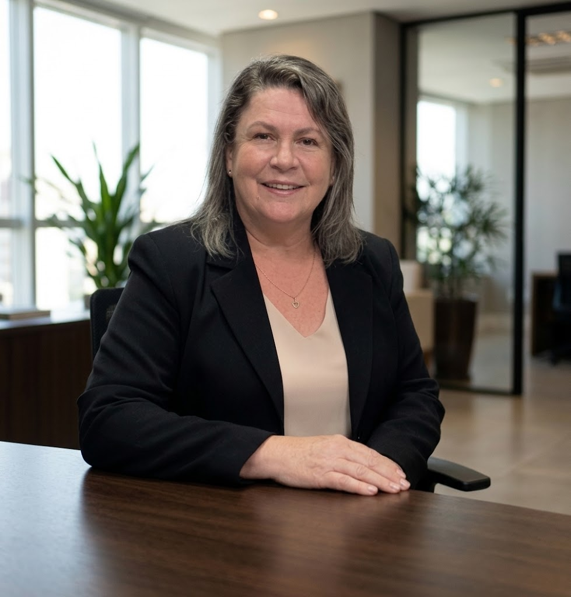

Candidatura à Direção de Unidade Administrativa Regionalizada
Juntos por uma gestão forte e transparente.
Liane Margarete Panzenhagen atua no Campus Universitário do Vale do Teles Pires desde a sua criação, em 1994. Conheça a proposta de trabalho para a direção administrativa do Campus.

Cinco eixos que norteiam nossa proposta de trabalho
Cada eixo reúne ações concretas para o Campus. Clique para ler.
Gestão Participativa
Diálogo, transparência e construção coletiva de um Campus para todos.
- Gestão de pessoas. Promover a integração entre as equipes, o compartilhamento de experiências e a formação continuada, em um ambiente de trabalho colaborativo, respeitoso e inclusivo, fortalecendo a comunicação interna e o trabalho em equipe.
- Participação democrática. Realizar assembleias, consultas e reuniões periódicas com a comunidade interna do Campus.
- Gestão transparente. Publicar relatórios de gestão, decisões administrativas e prestações de contas voltados ao dia a dia do Campus.
- Valorização das pessoas. Promover ações de reconhecimento, formação e melhoria das condições de trabalho e de estudo.
- Planejamento participativo. Definir metas, planejar e dividir as ações em equipe, valorizando a opinião do coletivo.
- Avaliação da gestão. Criar mecanismos periódicos de escuta, avaliação e divulgação dos resultados.
Infraestrutura e Tecnologia
Manutenção e ampliação dos espaços do Campus, com o objetivo de melhorar as condições de ensino, pesquisa e extensão e garantir o acesso às ferramentas digitais.
- Manutenção da infraestrutura física. Estabelecer prioridades para reformas, manutenção preventiva, adequação dos ambientes e ampliação do Campus.
- Modernização tecnológica. Garantir a modernização e a manutenção contínua dos laboratórios de informática, assegurando equipamentos tecnológicos atualizados para o uso acadêmico e administrativo do Campus.
Apoio e Integração Acadêmica
Fomentar a integração entre docentes, técnicos administrativos e estudantes, promovendo o apoio às atividades acadêmicas, a cooperação entre cursos e os eventos do Campus.
- Apoio ao acadêmico. Fortalecer, por meio do CAEST, o diálogo e a articulação com os acadêmicos, para aprimorar o acolhimento, qualificar o atendimento às demandas e promover melhores condições de bem-estar, conforto, inclusão e permanência na Universidade.
- Políticas afirmativas. Apoiar e fortalecer as políticas afirmativas e as ações institucionais de inclusão, equidade e respeito à diversidade, incentivando iniciativas que promovam igualdade de oportunidades, acolhimento e permanência estudantil, em articulação com os setores responsáveis e em consonância com as diretrizes institucionais.
- Integração acadêmica. Incentivar ações integradas entre cursos e departamentos, apoiando eventos institucionais que estimulem a participação dos acadêmicos de todos os cursos e fortaleçam a formação, a troca de conhecimentos e a cooperação interdisciplinar.
- Fortalecimento do ensino, da pesquisa e da extensão. Consolidar o ensino, a pesquisa e a extensão como pilares fundamentais do Campus, garantindo suporte aos projetos acadêmicos e ampliando o impacto social das ações universitárias.
- Comunicação e participação. Incentivar a participação da comunidade acadêmica na identificação de problemas, aprimorando os canais de comunicação e criando espaços de diálogo para reconhecer demandas e construir soluções coletivas.
Transparência e Eficiência
Uma gestão transparente, responsável e eficiente, pautada pela clareza das informações, pela otimização dos recursos públicos, pela simplificação dos processos administrativos e pelo compromisso com os resultados institucionais.
- Transparência nas ações. Ampliar a divulgação de decisões, investimentos, aplicação de recursos e resultados da gestão.
- Eficiência administrativa. Simplificar fluxos de trabalho, reduzir a burocracia e apoiar os procedimentos administrativos.
- Planejamento e acompanhamento. Estabelecer metas, prazos e indicadores para monitorar a execução das ações e avaliar os resultados.
- Gestão responsável dos recursos. Promover o uso racional dos recursos financeiros, materiais e humanos, priorizando as necessidades do Campus.
- Comunicação institucional. Fortalecer os canais de comunicação para facilitar o acesso às informações e dar mais clareza aos procedimentos.
Sustentabilidade e Parcerias
Promover práticas sustentáveis na universidade e fortalecer parcerias institucionais que ampliem as oportunidades de cooperação, inovação e desenvolvimento acadêmico, administrativo e social.
- Gestão sustentável dos espaços. Estimular a conservação dos ambientes universitários, a melhoria das áreas de convivência e a adoção de práticas ambientalmente responsáveis.
- Fortalecimento de parcerias. Ampliar a articulação com instituições públicas e privadas, organizações sociais e demais entidades, visando à interação com a comunidade interna e externa.
Quem é Liane Panzenhagen
Sou servidora técnica do ensino superior e atuo no Campus Universitário do Vale do Teles Pires desde a sua criação, em 1994. Ao longo de 32 anos, construí uma trajetória pautada pela dedicação ao Campus, pela experiência em gestão e pelo compromisso com o desenvolvimento institucional.
É com base nessa trajetória que apresento minha candidatura à Direção de Unidade Administrativa Regionalizada do Campus Universitário do Vale do Teles Pires. Meu objetivo é contribuir para uma gestão participativa, transparente e eficiente, que valorize as pessoas, fortaleça as atividades acadêmicas e administrativas e melhore continuamente as condições de trabalho, ensino e aprendizagem.
Sinto-me preparada e pretendo colocar minha experiência e meu conhecimento institucional a serviço de uma Universidade cada vez mais integrada, acolhedora e preparada para os desafios futuros, construindo, em conjunto com a comunidade acadêmica, soluções que atendam às necessidades do Campus e promovam seu desenvolvimento, sempre em parceria com a Diretoria Pedagógica.
Formação acadêmica
- Licenciatura em Matemática
- Especialização em Gestão Pública
- Especialização em Recursos Humanos
- Mestrado em Políticas Públicas e Gestão da Educação Superior
Trajetória no Campus
- Desde 1994Atuação desde a criaçãoExperiência nos setores Financeiro, Almoxarifado e Patrimônio.
- 2010 a 2014Coordenadora Regional de ColíderDois períodos consecutivos à frente da coordenação regional.
- AtualmenteRecursos HumanosAtuação no setor de Recursos Humanos e na Secretaria Administrativa dos Cursos.
No dia 12 de novembro, sua participação faz a diferença.
Conto com seu apoio e sua confiança para, juntos, construirmos um Campus cada vez melhor, com diálogo, participação e compromisso com toda a comunidade acadêmica.